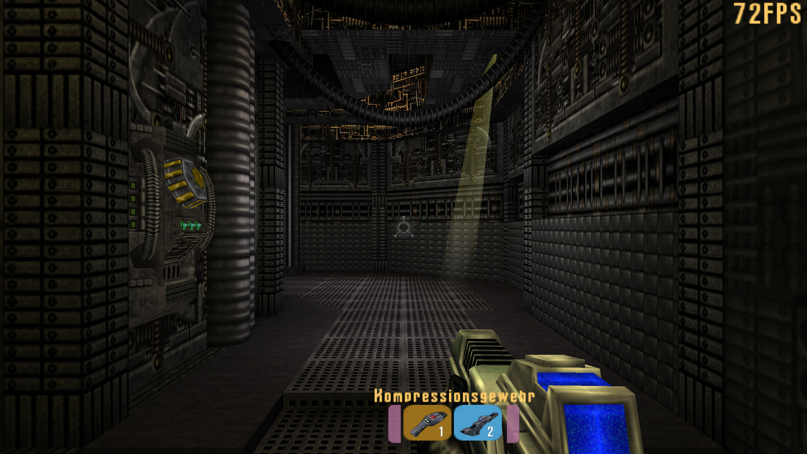
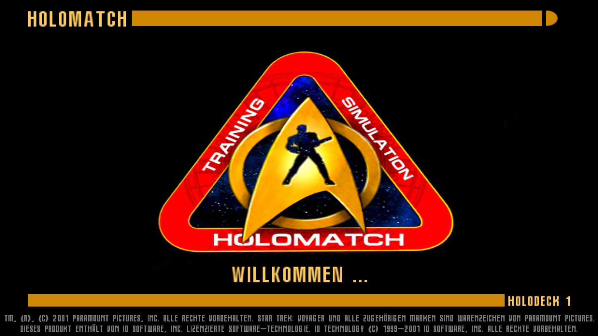

Star Trek: Voyager – Elite Force,
Rebuilt for Modern 64-Bit Vulkan
OpenHazard unifies Singleplayer, Holomatch Multiplayer, and the Dedicated Server on one clean 64-bit engine and Vulkan renderer — with built-in Bink cutscenes, native ARM64/x86_64 QVM JIT, OpenAL 3D audio, and Raspberry Pi 5 TBDR optimizations.
pak0.pk3–pak3.pk3 and efgamex86.dll from an original CD or GOG installation.
Live on Raspberry Pi 5 (1920×1080 Vulkan)
Running natively on Broadcom VideoCore VII (Mesa V3DV) with 4× MSAA, half-res bloom, per-pixel dynamic lights, and 16:9 widescreen UI.

borg2) — 4× MSAA, Alpha-to-Coverage, Half-Res Bloom & Per-Pixel Dynamic Lights (~70 FPS @ 1080p on Pi 5).
Engine Highlights
One unified codebase for desktop PCs, Apple Silicon Macs, and ARM64 single-board computers.
Unified SP + MP + Dedicated
openhazard-sp, openhazard-mp, and openhazard-ded share the exact same 64-bit engine and renderer_vulkan library. Retail QVMs run unaltered for full online server compatibility.
Built-in Bink Cutscenes
A minimal, statically linked LGPLv2.1+ FFmpeg 7.1.1 Bink-only decoder is embedded into openhazard-sp — intro and mission .bik videos work out of the box with zero external FFmpeg dependencies.
Modern Vulkan + TBDR Tuning
4× MSAA, Alpha-to-Coverage, Per-Pixel Dlights, Half-Res Bloom Pyramid, zero-load TBDR layouts, zero-shader vkCmdCopyImage swapchain fastpath, pure-depth mode, and low-latency MAILBOX pacing.
Universal ARM64 & 16 KB Pages
Portable ARMv8.0-A baseline with 64 KB ELF alignment and dynamic page-size vm_aarch64.c JIT — one Linux ARM64 binary runs on Raspberry Pi 4 (4 KB), Pi 5 (16 KB), RK3588, and 64 KB kernels.
GPU Auto-Tune Profiles
Automatically adapts MSAA, anisotropy, and bloom caps for Raspberry Pi 4 (V3D 4.x), Raspberry Pi 5 (V3D 7.x), and CPU software rasterizers — while desktop GPUs run at full fidelity (r_gpuAutoTune 0 to override).
OpenAL 3D Audio & HTTP FastDL
OpenAL Soft 3D spatial sound with accurate SP subtitle/dialog timing and automatic SDL fallback, plus dynamically loaded libcurl HTTP fast map downloads for Holomatch servers.
How OpenHazard Compares
Bridging the gap left by multiplayer-only Linux ports and 32-bit x86 compatibility wrappers.
| Port / Method | Singleplayer | Holomatch MP | Native Vulkan | Native ARM64 / Pi 5 | Built-in Bink (.bik) |
|---|---|---|---|---|---|
ioef-cmod |
No | Yes | No (OpenGL) | Limited | No |
lilium-voyager |
No | Yes | No (OpenGL) | Untested | No |
| GOG + Wine / Proton | Yes (32-bit x86) | Yes | Wrapper | No (x86 emu only) | Yes |
| OpenHazard | Yes (64-bit native) | Yes (Retail QVMs) | Yes (Quake3e) | Yes (4 / 16 / 64 KB) | Yes (static FFmpeg) |
Portable Packages (6 Targets via GitHub Actions)
Self-contained single-folder archives — extract, point to your retail baseEF data, and play.
| Platform | Architecture | Archive Format | Data Directory |
|---|---|---|---|
| Linux | x86_64 & arm64 (Pi 4/5, SBCs) |
.tar.gz |
~/.local/share/openhazard/baseEF/ |
| macOS | arm64 (Apple Silicon) & x86_64 |
.tar.gz (bundles SDL2 + MoltenVK) |
~/Library/Application Support/OpenHazard/baseEF/ |
| Windows | x86_64 & arm64 |
.zip (bundles SDL2.dll) |
%APPDATA%\OpenHazard\baseEF\ or portable baseEF\ |
Build & Quickstart (Linux / macOS)
Build from source in four commands and import your GOG installer automatically.
git clone https://github.com/GamingTux/OpenHazard.git
cd OpenHazard
# 1. Build minimal static LGPLv2.1+ Bink-only FFmpeg
./cmake/build-bink-ffmpeg.sh
# 2. Configure, compile (Release + LTO), and package
cmake -S . -B build -G Ninja -DCMAKE_BUILD_TYPE=Release
cmake --build build -j"$(nproc)"
cpack --config build/CPackConfig.cmake -B build
# 3. Import retail game data (GOG .exe or BaseEF folder)
./packaging/openhazard-import-data.sh /path/to/setup_star_trek_voyagertm_elite_force_1.2.exe
# 4. Play!
./packaging/openhazard.sh # Singleplayer (Vulkan)
./packaging/openhazard-mp.sh # Holomatch Multiplayer (Vulkan)
./packaging/openhazard-ded.sh # Dedicated Server